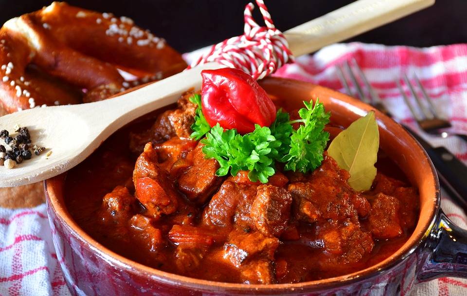

Carnes · Outros
Goulash

Ingredientes
- 4 cebolas cortadas em tiras
- 2 colheres (sopa) de óleo
- 700 g de pernil de porco em cubos de 2 cm
- 300 g de músculo em cubos de 2 cm
- 1 colher (sopa) de páprica
- 1 colher (chá) de kümmel (cominho)
- 1 colher (chá) de sal
- 1 1/4 xícara de creme de leite fresco azedado com 2 colheres (sopa) de suco de limão
Modo de preparo
- Ferva as cebolas 2 a 3 minutos para tirar o excesso de aroma; escorra.
- Numa panela de pressão de cerca de 5 litros, refogue as cebolas no óleo até ficarem transparentes.
- Junte o porco e o músculo e doure.
- Acrescente páprica, kümmel e 3 xícaras de água; cozinhe na pressão cerca de 40 minutos até a carne ficar macia. Tempere com sal.
- Transfira para embalagem própria para freezer, deixe esfriar e congele (creme à parte).
Observação
Congelamento: filme plástico e saco plástico. Descongelamento: aqueça no forno coberto com alumínio; sirva o creme azedo à parte. Ou descongele na geladeira e aqueça em fogo brando.